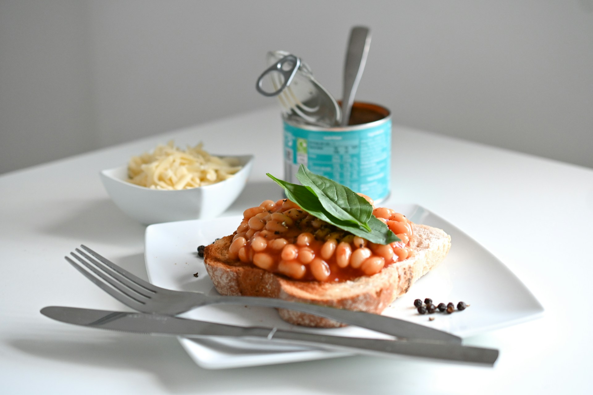

Homepage
Beans on Toast

Description
In a hurry? This tasty snack can be prepared in just a few minutes and is so simple that even a child can do
it
(serves 2)
Ingredients
- 1 tin of Branston baked beans
- 4 slices of bread
Steps
- Put the bread in the toaster.
- Empty the beans into a bowl and cook in the microwave for 2min, stirring halfway through.
- Butter the toast.
- Pour the beans over the toast.